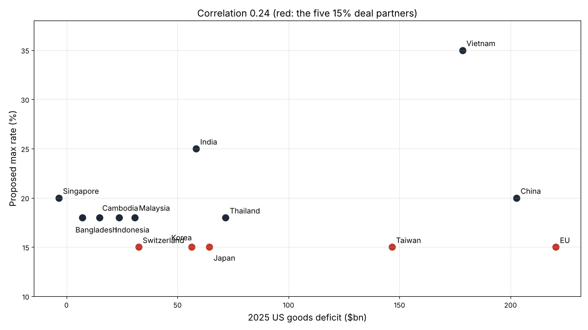
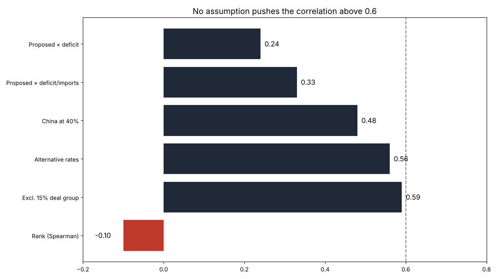

Japan up to 15%, Vietnam 35%: are the US proposed tariffs on 14 economies set by the size of the trade deficit? Testing USTR’s plan against 2025 Census data
On November 25, the Office of the US Trade Representative (USTR) proposed new tariffs on 14 economies, including Japan, China and the EU. Japan faces up to 15%, Vietnam up to 35% and China up to 20%.
The stated reason is the partners’ “structural excess capacity.” If so, the economies with which the US runs the largest deficits should face the highest rates.
The question here: how closely do the proposed rates track the size of the US trade deficit with each economy?
- The correlation between the proposed rates and 2025 US goods deficits across the 14 economies is only 0.24; deficit size explains very little of the rates.
- The five economies at 15% (EU, Japan, Korea, Switzerland, Taiwan) have deficits ranging from $32.5 billion to $220.4 billion, a 6.8x spread, while Singapore, with which the US runs a surplus, is proposed at 20%.
- What separates the rates looks less like deficit size and more like whether a deal or framework already exists. Japan’s 15% matches last year’s agreement.

Question and background
First, terms. Section 301 of the Trade Act lets the US President act against unfair foreign practices. This proposal was presented as a determination under Section 301(b).
A goods trade deficit is the amount by which US imports of goods from a country exceed US exports of goods to it. This piece covers goods only, not services.
Because the proposal cites “excess capacity,” you would expect the partners that sell the US far more than they buy, those with the largest US deficits, to face the highest rates.
On the other hand, the US signed tariff deals and frameworks with many partners in 2025, and USTR says the proposal takes them into account. Whether rates follow deficits or deals can be checked by lining up the numbers.
Data and method
Rates are the upper bounds in USTR’s November 25 proposal, cross-checked against the list compiled by law firm Baker McKenzie. China’s rate is up to 20%, with an alternative of 40%.
Deficits are full-year 2025 goods trade figures by country from the US Census Bureau. Exports, imports and balances were taken for each partner and expressed in billions of dollars.
We use two measures: the deficit in dollars, and the deficit divided by imports. The ratio removes some of the effect of country size.
The relationship is shown as a correlation coefficient, which runs from −1 to 1. Values near 1 mean “the bigger the deficit, the higher the rate”; values near 0 mean almost no relationship.
Results
| Economy | Proposed rate (max) | Alternative | 2025 US deficit | Deficit ÷ imports |
|---|---|---|---|---|
| EU | 15% | 20% | $220.4bn | 35% |
| China | 20% | 40% | $202.7bn | 66% |
| Vietnam | 35% | — | $178.3bn | 92% |
| Taiwan | 15% | 25% | $146.6bn | 73% |
| Thailand | 18% | 25% | $71.7bn | 79% |
| Japan | 15% | 20% | $64.4bn | 44% |
| India | 25% | — | $58.4bn | 56% |
| Korea | 15% | 25% | $56.4bn | 45% |
| Switzerland | 15% | 20% | $32.5bn | 31% |
| Malaysia | 18% | 25% | $30.8bn | 52% |
| Indonesia | 18% | 25% | $23.8bn | 69% |
| Cambodia | 18% | 25% | $14.9bn | 97% |
| Bangladesh | 18% | 20% | $7.1bn | 75% |
| Singapore | 20% | — | $3.4bn surplus | — |
The US goods deficit with the 14 economies totals $1,104.6 billion. The total US goods deficit in 2025 was $1,240.9 billion on a balance-of-payments basis; the bases differ, but the 14 account for most of it.
Yet the correlation between proposed rates and deficits is only 0.24. Using the deficit-to-imports ratio, it is 0.33. Deficit size explains only a small part of the rates.

The clearest case is the five economies at 15%. The EU deficit is $220.4 billion and Switzerland’s is $32.5 billion, a 6.8x gap, yet both face 15%. All five have signed tariff deals or frameworks with the US.
There is also the opposite case. Singapore is the only one of the 14 with which the US runs a surplus, of $3.4 billion. Its proposed rate is still 20%, higher than Taiwan’s 15% despite Taiwan’s $146.6 billion deficit.
The highest rate is Vietnam’s 35%, with a $178.3 billion deficit and a deficit-to-imports ratio of 92%. Here, deficit and rate line up. But for Vietnam, India and Singapore, the proposal spells out lower rates if a deal is reached.
Mexico, whose 2025 deficit hit a record $196.9 billion, is not among the 14. If deficit size were the selection rule, it would be one of the first names on the list.
Sensitivity analysis
We varied the assumptions six ways to see whether the result holds.

Using the alternative rates (Japan 20%, Korea 25%, and so on) raises the correlation to 0.56, because the alternatives put higher rates on deal partners too. Setting China at its 40% alternative gives 0.48.
Excluding the five 15% deal partners and using the remaining nine gives 0.59 for dollar deficits but 0.20 for the ratio. A rank correlation (Spearman) gives −0.10, which erases the relationship.
Under no assumption did the correlation exceed 0.6. The reading “bigger deficit, higher rate” does not become strong however the assumptions are moved.
Discussion
There is a counterargument. USTR’s stated reason is excess capacity, not the deficit, so a weak link between deficits and rates is to be expected. Comparing capacity indicators by country might show a different pattern.
The data have limits. The deficits cover 2025 only and miss this year’s moves. The proposed rates are upper bounds, and actual rates are set net of existing tariffs. Final rates are expected after the public hearing on January 25, 2027.
There are two tests. First, whether the final rates rise only for economies without deals. Second, whether China’s rate moves from 20% toward 40% after the US-China truce expires on January 10, 2027. Either would strengthen the reading that deals, not deficits, set the rates.
Conclusion
The proposed rates for the 14 economies barely track the size of US deficits. The correlation is 0.24 and stays below 0.6 under six alternative assumptions.
What divides the rates is more likely whether a deal or framework with the US exists. The five deal partners all sit at 15%, and the countries being pressed for deals are offered lower rates in the text.
How I see it
Here in Japan, I do not change my portfolio on tariff headlines. Japan’s 15% equals last year’s agreement and was no surprise. My businesses (a restaurant, real estate and shared offices) do not import or export, so tariffs barely touch them.
I hold my foreign stocks in dollars. When I see a tariff number, I first compare it with the cap in the last agreement. If it is inside the cap, it is not a reason to move my allocation.
References
- 米国通商代表部（USTR）「Section 301 proposed actions on structural excess capacity（14 economies）」2026年11月25日 https://ustr.gov/about-us/policy-offices/press-office/press-releases
- 米国勢調査局「Trade in Goods with Japan（2025）」2026年 https://www.census.gov/foreign-trade/balance/c5880.html
- 米国勢調査局「Trade in Goods with China（2025）」2026年 https://www.census.gov/foreign-trade/balance/c5700.html
- 米国勢調査局「Trade in Goods with European Union（2025）」2026年 https://www.census.gov/foreign-trade/balance/c0003.html
- 米国勢調査局「Trade in Goods with Vietnam・Taiwan・Thailand・Korea・Switzerland・India・Malaysia・Indonesia・Singapore・Cambodia・Bangladesh（2025）」2026年 https://www.census.gov/foreign-trade/balance/index.html
- 米国経済分析局（BEA）・米国勢調査局「U.S. International Trade in Goods and Services, December and Annual 2025」2026年2月19日 https://www.bea.gov/news/2026/us-international-trade-goods-and-services-december-and-annual-2025
- 米国経済分析局（BEA）「Annual 2025 highlights（trad1225annual-hist）」2026年2月 https://www.bea.gov/sites/default/files/2026-02/trad1225annual-hist.pdf
- Baker McKenzie「US USTR proposes Section 301 tariffs on 14 economies over structural excess capacity」2026年11月25日 https://globalimportblog.bakermckenzie.com/2026/11/25/us-ustr-proposes-section-301-tariffs-on-14-economies-over-structural-excess-capacity/
- ABEMA TIMES「米、日本など14カ国・地域に新関税案」2026年11月26日 https://times.abema.tv/articles/-/10292285
Charts by YUKI CAPITAL. Top image: Unsplash. This article is the author’s own record and not investment advice.
I record my daily numbers and decisions on X.